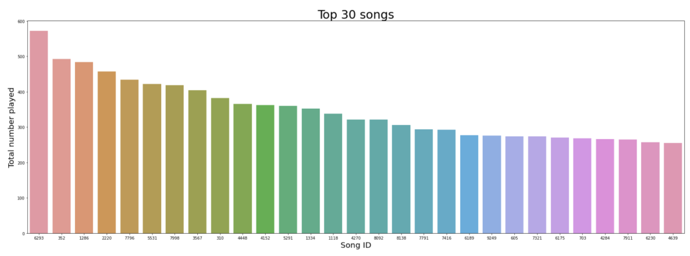
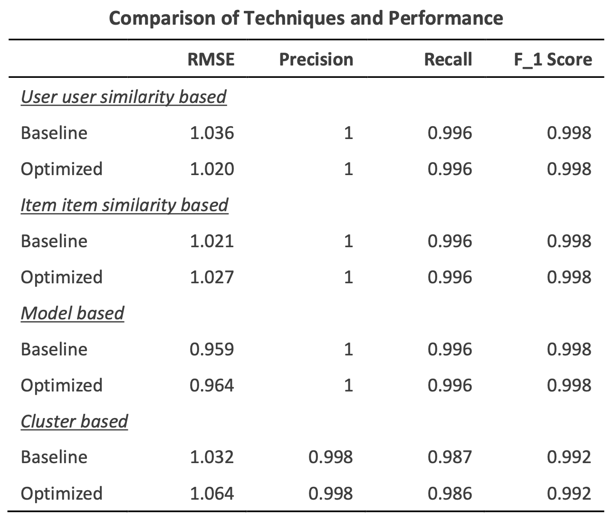
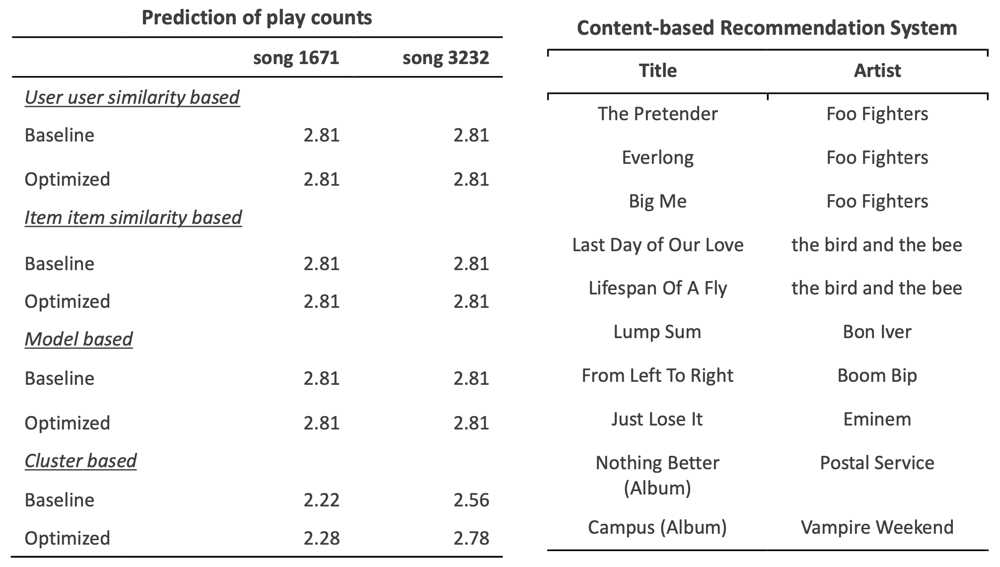

Music Recommender
A recommendation system for The Echo Nest Taste music data
If you don't have enough time, click here for a summary!
Click here for the code and notebook.
This is a capstone project from the Applied Data Science Program by MIT Professional Education.
Key Takeaways
The objective of this project is to build a system that recommends the best songs to customers. The project is important in improving users' efficiency in selecting sons and helping listeners to discover artists based on their preferences. I started by exploring the data and proposing possible techniques and a solution design. The data contains IDs for songs and users with information about songs. After filtering the data so that it contains users who have listened to at least 90 songs, songs that are listened to by at least 120 users, and records played more than once but less than 5 times, the data has 74,414 rows and 7 columns. I found that the final dataset is well distributed across songs and users. I compared rank-based, similarity-based, model-based, and content-based models to find a recommendation model that performs best. After comparing the performances of the models, I suggest combining the model-based recommendation system to predict users’ preference over certain songs and a content-based recommendation system to suggest a list of songs that are similar to a specific song. Using the two recommendation systems, we can not only recommend songs a certain user might like but also provide a list of songs that are close to a specific song that the user chose.
Data
I use The Echo Nest Taste music data consisting of one million records. To build the system, I first explored the data, compared different recommendation systems built by different algorithms, and chose the best system that recommends the best song users would like. Before looking at the proposed solution, I verified that the records played are well distributed across multiple songs. In the figure below, we can see that the song “4639” was played more than 200 times as a top 20 song, while son “6293” was played over 500 times.
Solution Design
I propose the combination of model-based and content-based recommendation systems as the best solution. In the table below, we can see that all the models perform well with F_1 scores higher than 0.99. However, user-user similarity-based, item-item similarity-based, and cluster-based models have RMSEs larger than 1. The model-based model has RMSEs lower than 1, especially having 0.959 for the baseline model. I propose using the model-based model to increase the accuracy of the model.

The left-hand-side of the table below shows the predicted play count for the song “1671” which is known and the predicted play count for the song “3232” which is not known from the data. The model predicts the play counts for the user “6958”. The song “1671” is known to be played twice by the user “6958”. The table shows all the models except for the cluster-based model predict the play count to be 2.81 for both “1671” and “3232”. The cluster-based model predict the play counts to be 2.22 and 2.56 for the song “1671” and “3232”, respectively.
In addition, I propose additionally using a content-based model that successfully recommends a list of songs similar to a specific song. The right-hand-side of the table shows the list of songs recommended to be similar to “Learn To Fly” by “Foo Fighters”, using a content-based recommendation system. Since the system recommends three songs from “Foo Fighter’s” and other songs that are in a similar mood, we can say that the system works well in recommending songs based on users’ input. This system can complement the model-based system in that it recommends songs not only based on the users’ historical preference but also their direct input of a target song. Rather than recommending possibly liked songs, it can be used to show a list of songs that the user wants to enjoy today, regardless of his or her overall preference.

Implementing the System and Key Action Items
I recommend using the combination of a model-based recommendation system and a content-based recommendation system. First, we can recommend songs that are predicted to play many times by the user at the top. Next, we allow the users to choose certain songs that they enjoyed recently, and recommend songs that are related to the target songs. If the users want to stay passive and do not want to provide any additional information, they can stay silent and get recommendations based on their history. However, if the users want to choose a certain song that enjoyed and listen to similar songs, they can specifically search for those songs. It will be also possible to give them options to choose several songs every day and recommend related songs together with songs that are recommended based on historical records. This method gives the users more opportunities to do research about which songs they would enjoy, and navigate around different artists and songs.
Challenges and What We Can Do
The challenge of the recommendation system is that there is a tendency of the recommendation systems to suggest limited sets of options repeatedly, which is called a “self-reinforcing feedback loop”. Options that users may like but never presented and never chosen are unfairly penalized. Completely excluding songs that were picked cannot be a solution, because this prevents the users from revisiting songs they liked. Since users tend to play songs they like multiple times, there should be a good mix of new unknown songs and already-picked songs. Capan et al. (2019) suggest using a Bayesian choice model that is already aware of the issue of limited exposure and that admits efficient learning. They introduce the Dirichlet-Luce model that provides efficient and fair preference estimates.
The other challenge is that the dataset does not include information about new and potential users. Since the recommendation systems rely on data, they will not perform well when new users do not have similar characteristics to the existing users. This is also true when a new style of music is released and added to the system. Therefore, we need to keep track of all the new songs and albums released as well as new artists and new trends in the music industry. In addition, it is important that we keep updating the training dataset and update the recommendation system. We can actively use surveys and reviews from customers to make improvements.
Further Analysis and Possible Improvement
Moving forward, we can make the model more complex and well-defined by expanding the data to train the model, and better personalize the recommendations. First, we can separate user groups and apply different methods that perform best for each user group. After our platform expands and attracts more customers, we can conduct a deeper analysis of customers and build several models that perform well for different customer groups. For example, young users tend to enjoy listening to new songs and trying songs from new genres. On the other hand, older generations tend to stick to a certain genre or a specific artist. They often hesitate to listen to a newly released song. Keeping that in mind, it might not be the best option to keep recommending new songs to users in their fifties, while users in their twenties can be dissatisfied if they are recommended the same songs repeatedly. Therefore, it will be important to build an optimal recommendation system for each target group.
We can also provide information about the play counts or listeners’ characteristics to the artists. In the long-term, this service can further improve both artists' and users' satisfaction, because artists often change their target listeners without knowing listeners’ preferences and choice of songs. Additionally, we can provide additional information to the users as well as the artists. We can show what other users who have similar characteristics (age, gender, app usage, …) generally listen to. It can provide new insight to the users that they have never thought about. The idea is not only to take information and data from the users but also to provide information to the users from whom we can get the best feedback.